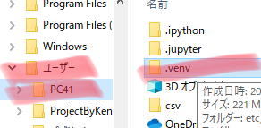

自動アッププログラムの使い方
■データ用意
・データがない場合は、Chatworkから誰かからデータを貰う。

・ダウンロードしたデータは、移動するため一度デスクトップに出した方が移動させやすい。
・データを移動させる先のフォルダを開く。
・ユーザーからProjectByKenshinを開く。
・そこに先ほど出したデータを入れる。
■プログラムを開く
1.アドレスをコピー

・ユーザー → PC41 → .venvを開く。
・その後Scriptsを開く。
・上部のパスが書いてあるところで右クリックをしてアドレスをコピー。
2.jupyter labを開く
・コマンドプロンプトを開く。
・上記の写真のように cdを記入した後、先ほどコピーした
C:\Users\PC41\.venv\Scriptsをペーストしてエンター。
・その後jupyter labを記入してエンター。
■プログラム詳細手直し
1.データのパスを編集
・赤線部分のDentyanをダブルクリック。

・そしたら先ほど移動したデータのパスをコピーする。
・データのところで Shift + 右クリックでパスのコピーをクリック。
・その後プログラムに戻り、赤線のところを選択して先ほどコピーしたものをペースト。
※ rは選択しない。
2.エクセルの番号修正
・青ラインのところで、アップしたい商品の行番号を記入。
・赤のところを特定の列番号に直す。
※合っている場合はいじらなくて良い。
※下記画像参考。
・赤ラインのところと下のアルファベット番号を照らし合わせてプログラムの赤いところに書き込む。
※例：Fの場合は 6。
※例：ACの場合は 26 + 3 で29。
■プログラムを走らせる
・修正したらプログラムのところをクリックして、Shift + Enter。
・動作している間は右上の丸が黒丸、終了したら白丸になる。
■シャットダウン
・左上のFileを選択して、1番下のshut downを選択して終了。